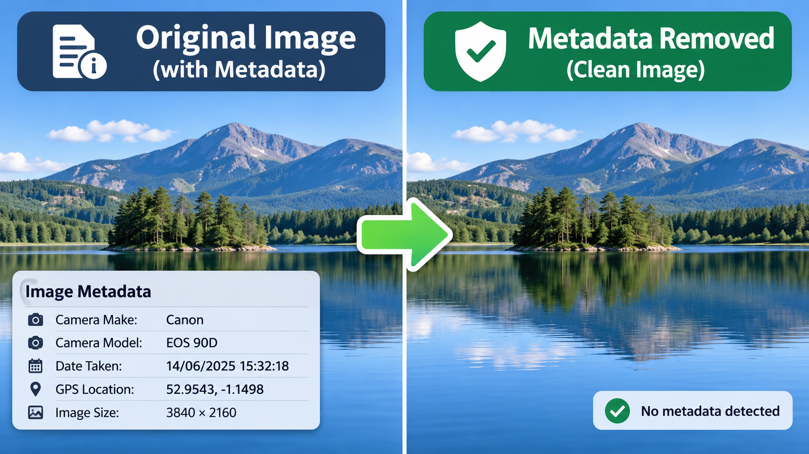

Select an image
Choose a JPEG, PNG, or WebP file from your device. It stays in your browser.
Browser-based image cleanup
Remove EXIF, GPS, and other embedded photo metadata in your browser. Image processing runs locally and is not sent to an image-processing server.
On-device image cleanup
Higher quality usually means a larger file. PNG output is lossless and ignores this setting.
Image processing runs in this tab. Your original stays unchanged.
A safer share in seconds
Phones and cameras can save personal details inside an image. The browser-based image processor redraws the photo locally and does not send it to an image-processing server.
Choose a JPEG, PNG, or WebP file from your device. It stays in your browser.
Your browser creates a new image without embedded EXIF, GPS, XMP, or thumbnail data.
Download and share the new file. Your original photo is never modified.
Before and after
This illustration shows the kind of camera and location details a photo may contain—and a copy with its original metadata removed.
Remove metadata from a photo
Supported formats
JPEG, PNG, and WebP can be cleaned in this tool, subject to your browser’s image support. HEIC / HEIF is not supported here yet.
Privacy guides
Frequently asked questions
EXIF (Exchangeable Image File Format) is information saved inside many photos by a camera or phone. It may include the date and time a photo was taken, camera settings, device model, and sometimes GPS location.
PNG output is lossless. JPEG and WebP are re-encoded by your browser and may lose some quality; choose a higher quality setting to reduce that change. Your original file is not altered.
The image-processing code decodes and re-encodes the file locally and does not send it to an image-processing server.
JPEG and PNG photos from an iPhone are supported. Many newer iPhone photos use HEIC / HEIF, which this tool cannot process. We do not accept those files or upload them for conversion.
The clean output is newly created from the image pixels, so the original embedded EXIF and GPS fields are not carried over. The image’s visible content is retained.
No. HEIC / HEIF decoding and encoding are not included. The tool supports JPEG, PNG, and WebP only when your browser can decode and encode them.